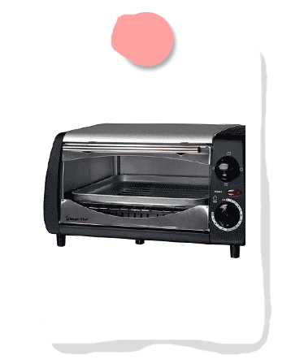
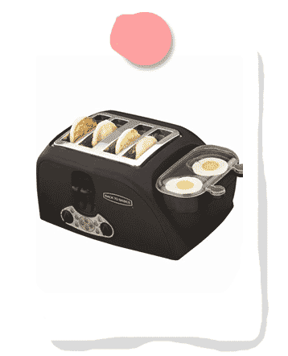
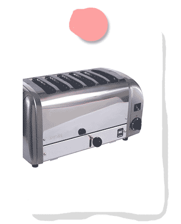
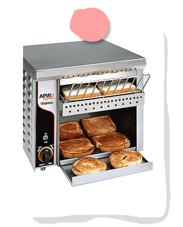

Special Toasters




Types of Toasters
- Toaster Ovens
- Egg Cooker Toasters
- Multiple Slot Toasters
- Conveyer Toaster
Toaster Ovens- Toaster ovens are a common staple to many homes. Like a combination between an oven and a toaster, not only can toaster ovens toast your bread to a nice crisp, but can also make small pizzas and fries.
Egg Cooker Toasters- Put the egg inside the small cooker on the side and watch your entire breakfast cook right before your eyes! Your eggs will be sunny side up and super delicious.
Multiple Slot Toasters- A typical toaster comes with 2 slots for 2 slices of bread, but the 4 slot toaster is becoming increasingly popular. The 6 slot toaster, pictured here, toasts 6 slices of bread at once. The 8 slot toaster is difficult to come by, but when you do, it is expensive.
Conveyor Toaster- Suitable for making a ton of toast in a short amount of time. The bread goes across the conveyor belt, and the heating elements cook both sides of the bread.